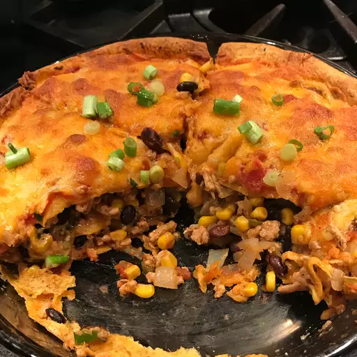

Home
Mexican Casserole

About
Small dinner pie made with salsa, tortillas, refried beans, cheese,
and onions.
Ingredients
- 1 (16 ounce) can refried beans
- 3/4 onion, diced
- 5 (10 inch) flour tortillas
- 1 cup salsa
- 2 cups shredded Cheddar or Colby Jack cheese
Directions
-
Preheat oven to 375 degrees F (190 degrees C). Spray a 9-inch pie
pan with non-stick cooking spray.
-
In a saucepan, cook refried beans and onions (to soften them) on
medium-high heat for about 5 minutes.
-
Place one tortilla in the bottom of the greased pan. Spread about
1/3 cup of the bean mixture over it. Layer a few tablespoons of
salsa over this. Then, place another tortilla over the salsa, and
add more of the bean mixture. Follow the beans with a big handful
of cheese, spreading evenly. repeat layers, spreading the
ingredients evenly over the tortillas. On the top layer, make sure
to use lots of salsa and cheese!
-
Bake until the cheese is melted, approximately 15 to 20 minutes.